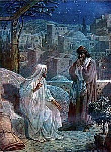

1 A ruler once came to Jesus by night
To ask Him the way of salvation and light;
The Master made answer in words true and plain,
"Ye must be born again."
Refrain:
"Ye must be born again,
Ye must be born again;
I verily, verily say unto thee,
Ye must be born again."
2 Ye children of men, attend to the word
So solemnly uttered by Jesus the Lord;
And let not this message to you be in vain,
"Ye must be born again." (Refrain)
3 O ye who would enter that glorious rest,
And sing with the ransomed the song of the blest;
The life everlasting if ye would obtain,
"Ye must be born again." (Refrain)
4 A dear one in heaven thy heart yearns to see,
At the beautiful gate may be watching for thee;
Then list to the note of this solemn refrain,
"Ye must be born again." (Refrain)
This song was written
while Stebbins was helping Dr. George Pentecost in evangelistic
meetings in Worcester, Massachusetts: During those meetings, one
of the subjects preached upon was the "New Birth." While presenting
the truth, enforcing it by referring to various passages of
Scripture, Dr. Pentecost quoted our Lord’s words to Nicodemus,
"Verily, verily, I say unto thee, ye must be born again"…It
occurred to me that by taking the line "Verily, verily, I say
unto thee," from the third verse, and putting it with the line, "Ye
must be born again," and by transferring the word "I" from the middle
of the first line to the beginning, so it would read, "I verily,
verily, say unto thee, Ye must be born again," those passages would
then fall into rhythmical form, and by the use of some repetitions
could be made available for a musical setting, and also for a
chorus to the hymn, if some suitable verses could be found…I spoke
to Reverend…Sleeper, one of the pastors of the city who sometimes
wrote hymns, of my impression and asked him if he would write me some
verses on the subject. He acted at once on my suggestion and soon
after came to me with the hymn…Before the meetings closed a musical
setting was made. George Stebbins, Memoirs and Reminiscences

Jesus Counsels Nicodemus
William B. Hole
1846–1917
史滌平(George Coles
Stebbins1846-1945)是福音詩歌的作者，生在紐約奧爾良，他在一個農場裡度過了童年，直到23歲，1869年他搬到芝加哥， 1870年成為第一浸信會音樂總監， 1874年秋天，他辭職定居在波士頓。他在芝加哥的時候，結識了穆迪和孫基，並與布立斯、惠特爾他們兩人都參加了幕穆迪開創的大福音運動。
"YE MUST BE BORN AGAIN"
"…Except a man be born again he cannot see the kingdom of God"(John
3.3)
INTRO.:
A
song which emphasizes the absolute necessity of being born again is "Ye Must Be
Born Again" (#339 inHymns
for Worship Revisedand #547 inSacred
Selections for the Church). The text was written by William True Sleeper
(1819-1904). Born in New Hampshire and educated at Phillips-Exeter Academy, the
University of Vermont, and Andover Theological Seminary, he became a
Congregational minister in Maine and Massachusetts. The tune (Born Again) was
composed by George Coles Stebbins (1846-1945). A native of New York, he was a
musician who worked with Dwight Moody of Chicago, IL, and other revival
evangelists as a song director and hymnbook editor.
Among Stebbins’s other well known melodies are those for Fanny Crosby’s "Jesus
Is Tenderly Calling" and "Saved By Grace," James Edmeston’s "Savior, Breathe An
Evening Blessing," James G. Small’s "I’ve Found A Friend," Cecil Alexander’s
"There Is A Green Hill," William D. Longstaff’s "Take Time To Be Holy," Edward
Ufford’s "Throw Out The Lifeline," Adelaide Pollard’s "Have Thine Own Way,
Lord," Charles C. Luther’s "Must I Go And Empty Handed?", and Frances R.
Havergal’s "True-Hearted, Whole-Hearted." "Ye Must Be Born Again" came about in
1877 when Stebbins was helping George Pentecost in evangelistic meetings in
Worcester, MA, where Sleeper was the local minister. Pentecost preached on "The
New Birth." Stebbins thought of some words for a chorus and asked Sleeper, who
was known to write poetry, to provide some verses on the subject. Before the
meetings closed, the musical setting was made. The hymn first appeared inGospel
Hymns No. 3of 1878 which Stebbins helped Ira D. Sankey and
James McGranahan to edit.
A few years later, Sleeper and Stebbins collaborated on another hymn, "Jesus, I
Come," beginning, "Out of my bondage, sorrow, and night." Among hymnbooks
published by members of the Lord’s church during the twentieth century for use
in churches of Christ "Ye Must Be Born Again appeared in the 1948Christian
Hymns No. 2and the 1966Christian
Hymns No. 3both edited by L. O. Sanderson; the 1959Majestic
Hymnal No. 2and the 1978Hymns
of Praiseboth edited by Reuel Lemmons; and the 1965Great
Christian Hymnal No. 2edited by Tillit S. Teddlie. Currently,
it can be found in the 1992Praise
for the Lordedited by John P. Wiegand in addition toHymns
for Worship,Sacred
Selections, and the 2007Sacred
Songs of the Churchedited by William D. Jeffcoat.
The song reminds us of the importance and meaning of being born again.
I. Stanza 1 recounts the conversation between Jesus and Nicodemus.
"A ruler once came to Jesus by night To ask Him the way of salvation and light;
The Master made answer in words true and plain, ‘Ye must be born again.’"
A. John tells us how Nicodemus, a ruler of the Jews, came to Jesus by night:
Jn. 3.1-2
B. From the fact that he understood that Jesus was a teacher come from God and
from Jesus’s answer, we can reasonably conclude that He was asking about
salvation, and Jesus answered His questions: Jn. 3.4-5
C. What Jesus told him was that "you must be born again": Jn. 3.6-7
II. Stanza 2 applies Jesus’s message to all the children of men.
"Ye children of men, attend to the Word, So solemnly uttered by Jesus the Lord;
And let not this message to you be in vain, ‘Ye must be born again.’"
A. "Children of men" refers to all responsible human beings because all have
sinned: Rom. 3.23
B. Thus, all responsible human beings need to attend to the word that was so
solemnly uttered by Jesus the Lord because it is by His word that we shall be
judged: Jn. 12.48
C. The message of His word is that we must be begotten again by the gospel: 1
Cor. 4.16
III. Stanza 3 encourages all who wish to be saved to respond to the message of
Christ.
"O ye who would enter that glorious rest, And sing with the ransomed the song of
the blest,
The life everlasting if ye would obtain, ‘Ye must be born again.’"
A. There is a glorious rest that remains for the people of God: Heb. 4.1-9
B. Those who enter that glrious rest will be able to sing with the ransomed the
song of the blest: Rev, 5,8-9
C. However, if we wish to have the promise of eternal life must be born of God:
1 Jn. 2.25, 4.4-5
IV. Stanza 4 points to the final reward for those who would respond to the
message of Christ.
"A dear one in heaven thy heart yearns to see, At the beautiful gate may be
watching for thee,
Then list to the note of this solemn refrain, ‘Ye must be born again.’"
A. Most of our books have omitted this stanza, and the only one to contain it,Sacred
Selections, changes it to "The dear One in heaven thy heart yearns to see,
At the beautiful gate He is watching for thee." In fact, editor Crum
changed nearly every single song that talks about seeing "dear ones" or "loved
ones" in heaven to "saved ones" or something like that. While we do recognize
that there may well be "loved ones" here on earth who will not be in heaven, one
of the blessings of the resurrection and heaven is being reunited with "loved
ones" in the faith who have gone before: 1 Thes. 4.13-18
B. Whether you think of the song as referring to "dear ones" in Christ who have
died or Christ Himself, the "beautiful gate" obviously refers to the portal
leading to eternal life in heaven where the righteous will be reunited with one
another and with the Lord: Rev. 21.12-13, 21
C. This is the hope of the Christian, but we must remember than in order to
realize this hope of living forever we must be born again by the incorruptible
seed which lives and abides forever: 1 Pet. 1.22-25
CONCL.:
The chorus takes the words of the Lord to Nicodemus from Jn. 3.3, transfers the
word "I" from the middle to the beginning, and pairs them with His statement
from verse 8, to form a rhythmical pattern:
"Ye must be born again, Ye must be born again;
I verily, verily, say unto thee, Ye must be born again."
Many people in the religious world, even some calling themselves Christians,
completely misunderstand the concept of being born again. They often talk
about "born again Christians" as if there were any other kind. A Christian is
simply one who has been born again. Also, this being "born again" is not simply
a passive experience that one prays and waits for, but an action on the part of
God that is the result of our own obedience to His terms of pardon. I have heard
an objection to this song that since so many people in the religious world do
misunderstand the idea of being born again perhaps we should not sing it.
However, my response is if the Bible says it, why should we not sing it? Jesus
stresses the essentiality of regeneration to people who wish to enter the
kingdom of God by saying, "Ye Must Be Born Again."